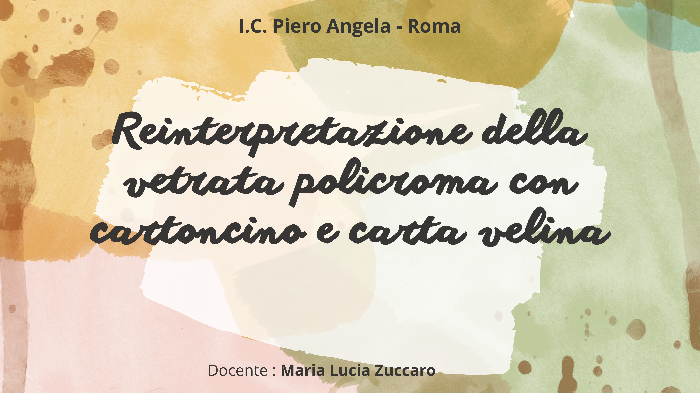
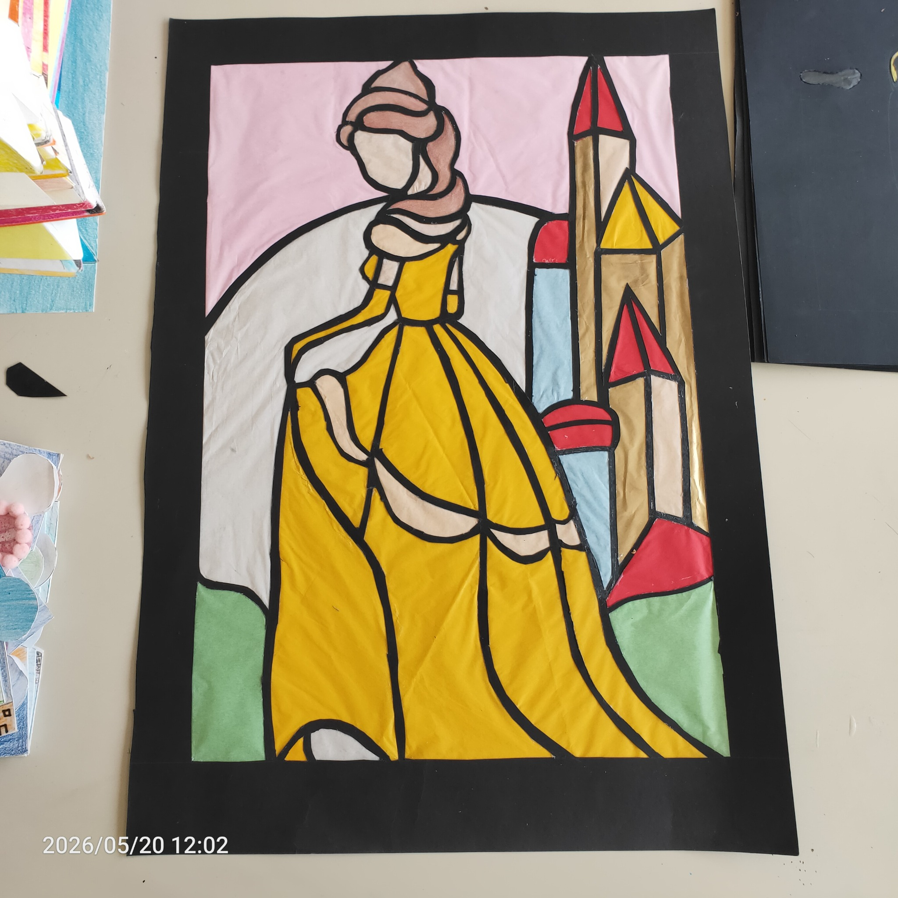
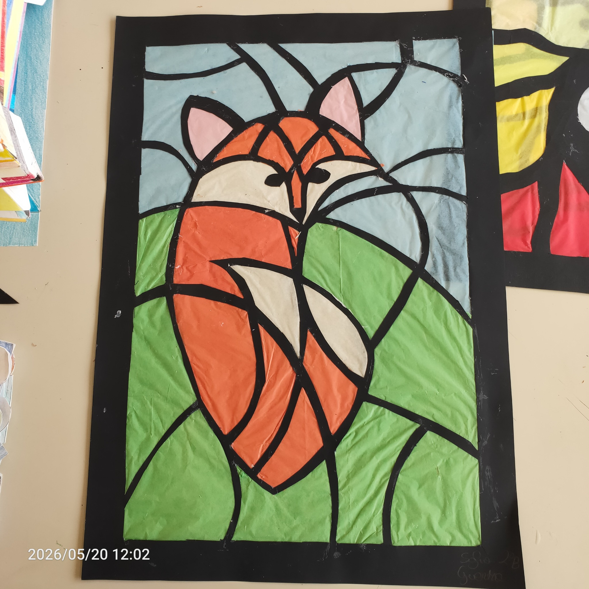
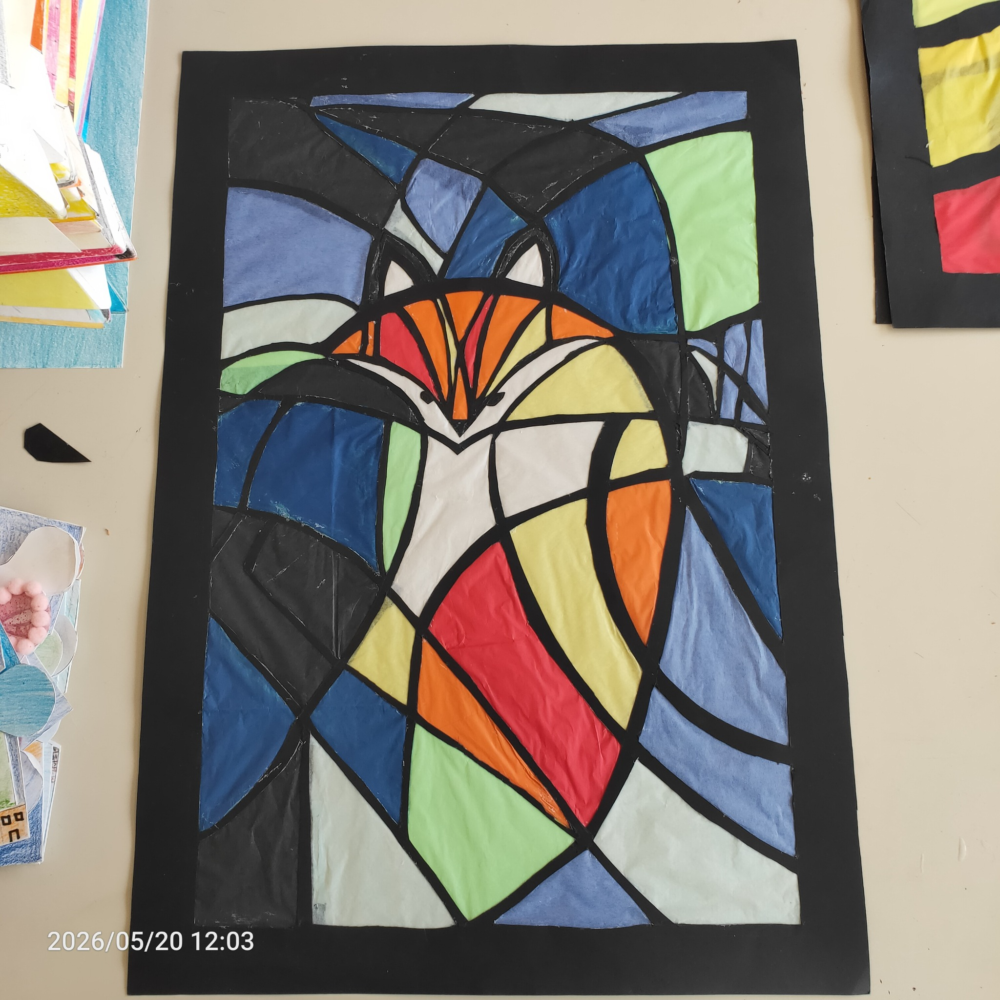
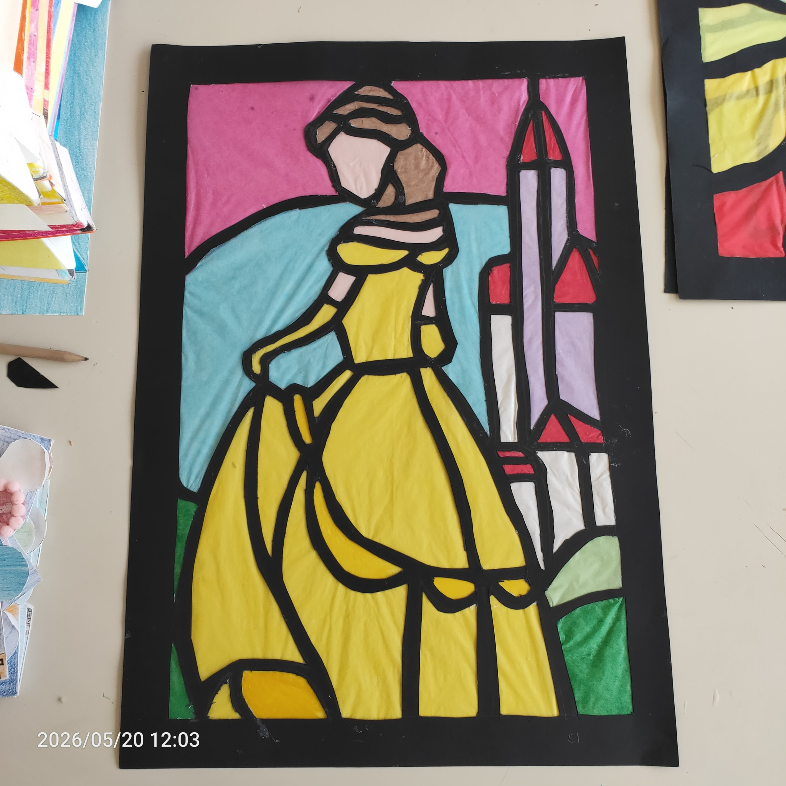

Classi seconde · Laboratorio
Vetrata di carta
Un’attività dedicata alla reinterpretazione della vetrata policroma attraverso cartoncino e carta velina, lavorando sulla relazione tra struttura, colore, trasparenza e luce.
Elaborati degli studenti
Alcuni esempi del lavoro
Una piccola selezione di elaborati realizzati in classe, utili per mostrare come il tema della vetrata policroma possa essere interpretato con soggetti e soluzioni cromatiche differenti.



